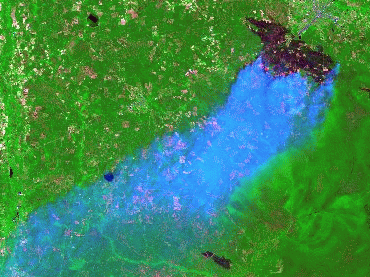

Мониторинг природных пожаров
Краткое описание проекта
Природные пожары - регулярное явление ежегодно приводящее к огромным убыткам, но до сих не имеющее адекватной системы мониторинга, доступной на всех уровнях.
Количество доступных данных, позволяющих организовать эффективный мониторинг и информации по этой теме достаточно велико и всё что нужно - перевести эту информацию в удобную для практического использования форму и сформировать вокруг них сообщество активных пользователей и экспертов.
Цель этого проекта: повышение активности в области дистанционного мониторинга и исследования природных пожаров.
Сроки проекта: Апрель - Октябрь 2011
В рамках проекта планируется:
- Обеспечение лучшего доступа к базовым и готовым данным о пожарах.
- Методическая поддержка - публикация материалов описывающих получение, подготовку и обработку пожарных данных и вспомогательных данных для мониторинга.
- Конкурс “Исследование динамики пожаров на основе данных дистанционного зондирования”. Подробнее о конкурсе
Задать вопросы и получить консультацию можно в специальном Форуме или по электронной почте.
Смотрите также:
| Координатор проекта: | Спонсор проекта: |
 |
Мы приглашаем заинтересованных спонсоров и партнеров поддержать проект любым доступным способом. Это может быть экспертная поддержка, материалы, открытые данные и призы участникам конкурса.

Дата создания: 04.04.2011